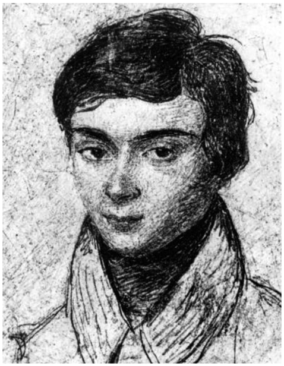
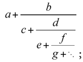
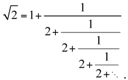
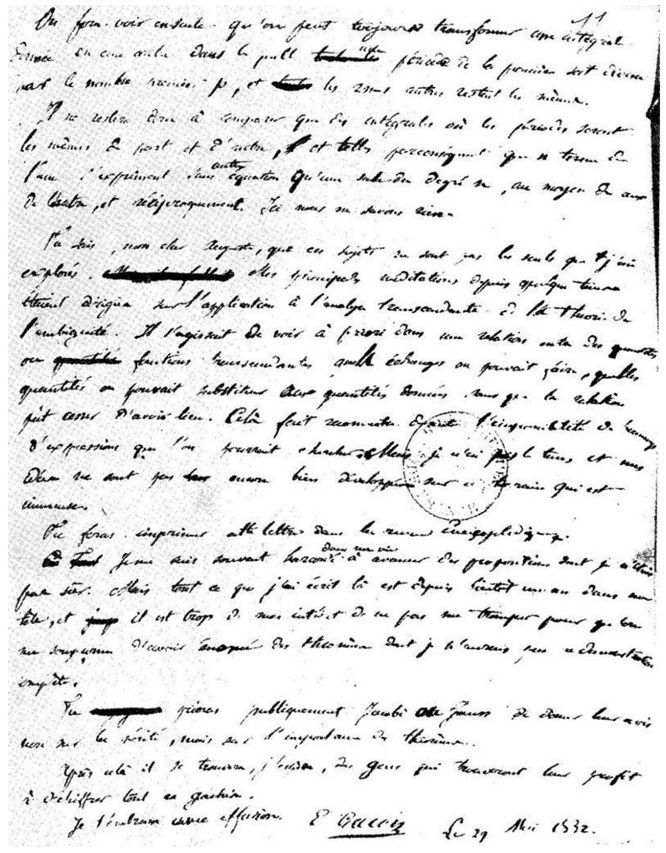

Évariste Galois: French (1811–1832)
You might expect the life story of Évariste Galois to be a short one, since he lived only to age twenty. Yet during these two decades years, he experienced a number of turbulent events. Before we consider his biography, we should note that his main contribution to mathematics is an entire field of study that bears his name—something not particularly common in the field of mathematics. Galois theory is a part of abstract algebra and draws a connection between two major theories: group theory and field theory. To the nonmathematician, this explanation might seem meaningless. However, we will try to show some of the new insights that result from this theory. For example, Galois’s work allows us to determine solutions to higher-degree equations using only the four arithmetic operations and extractions of radicals (such as square roots, cube roots, etc.). His work also allows us to determine which regular polygons are constructible using only a straightedge and compasses, as well as why it is not possible to trisect a general angle using only a straightedge and compasses. These are just a few of the rather simple topics that might well have been presented in your secondary-school curriculum and that owe their solution to Galois’s work.
Let us now consider how this mathematical genius navigated his twenty years. He was born on October 25, 1811, in Bourg-le-Reine, France, where in 1814 his father, Nicolas-Gabriel Galois, became mayor of the town. Uncommonly for the times, his mother, Adélaïde-Marie Demante, was a highly educated lawyer and provided her son home schooling until age twelve, even though at age ten, Évariste had been offered admission to the College of Reims. In 1823, he entered the Lycée Louis-le-Grand. There he won first prize in Latin, but much preferred studying mathematics, which he did intensively at age fourteen. He showed his talent by reading rapidly through Adrien-Marie Legendre’s Éléments de Géométrie, a book that, in a certain sense, served as the model for the American high-school geometry course. At age fifteen, he started to take the theory of equations very seriously. Curiously, his teachers were not impressed with him, or, as some might say, they felt intimidated by him.

Figure 32.1. Évariste Galois. (Drawing on gray paper, ca. 1826.)
In 1828, he applied to the prestigious École Polytechnique but did not perform well enough on the oral exams to be accepted. Shortly thereafter, he applied for admission to the École Normale, an inferior institution, and was accepted; the examiners seemed to be impressed by him. In 1829, he published his first paper on the topic of continued fractions. These are fractions of the form

and they can be used to express such numbers as

Some of the papers he submitted shortly thereafter were not accepted, for a variety of reasons, some of which were political and not necessarily mathematical. Paris was rather turbulent in January 1831. Galois quit school to join a militia, where split his time engaged in politics and in mathematics. Occasionally, members of the militia group were arrested, but he had no long stay in jail. In April 1831, Galois and the other officers of the militia were acquitted of all charges; and later, in May, they were honored with a banquet. At this banquet, Galois proposed a toast to the king—actually threatening his life; consequently, Galois was arrested again the following day. In June of that same year, he was acquitted once again. His radical behavior continued right after Bastille Day (July 14, 1831), when he headed a protest while wearing the uniform of the disbanded militia and heavily armed with a pistol, a rifle, and a dagger. Once again, he was arrested. In October, he was sentenced to six months in prison; then he was released on April 29, 1832.
We might say that Galois’s time in prison was not completely wasted, since he continued to develop mathematical concepts there.1 Another one of his papers was rejected while he was in jail, and he reacted violently and indicated that he would no longer publish through the academy, and only with his friend Auguste Chevalier. His rejection letter indicated that he needed to be more precise and less incomprehensible. He did take this advice and began to collect his mathematical manuscripts to bring them into a better intelligible fashion.
Now aged twenty, he was thrown into a pistol duel. There are numerous speculations as to how he was drawn into a duel against a person, who was

Figure 32.2. The final page of Galois’s mathematical work, written on the eve of his death, has as its next to the last line, “déchiffrer tout ce gâchis” (“to decipher all this mess”). (Letter from Évariste Galois to his friend Auguste Chevalier, May 29, 1832.)
seen as a skilled marksman. There is great controversy as to what led to his fatal duel on May 30, 1832. Was it over competition for a woman’s love? Was the opponent in the duel the woman’s uncle or fiancé? Or was this duel simply staged by the police to eliminate a political enemy? In any case, Galois stayed up all night before the scheduled duel, writing letters to friends and attaching a manuscript of his works in a somewhat more intelligible form. It is believed that he suspected he would not be victorious in the upcoming duel. It is often believed that the material he left behind on that fateful night is today the basis of what we refer to as Galois theory.
The duel took place early in the morning of May 30, 1832.2 He was shot in the abdomen and died the next morning in the hospital to which he had been taken by a passing farmer. His radical behavior did not end even at this sad time, as he refused the support of a priest and told his younger brother, Alfred: “Ne pleure pas, Alfred! J’ai besoin de tout mon courage pour mourir à vingt ans!” (“Don’t cry, Alfred! I need all my courage to die at twenty!”). On June 2, Évariste Galois was buried in a common grave at the Montparnasse Cemetery.